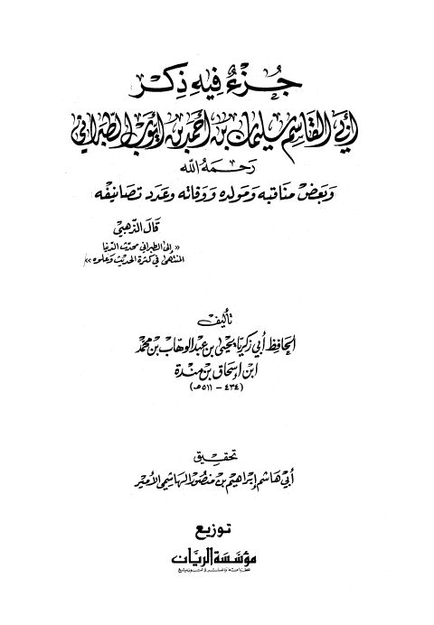

Downloads need an internet connection.
جزء فيه ذكر أبي القاسم سليمان بن أحمد بن أيوب الطبراني وبعض مناقبه ومولده ووفاته وعدد تصانيفه
Authors: يحيى بن عبد الوهاب بن محمد بن إسحاق بن مندة
Editors: إبراهيم بن منصور الهاشمي الأمير
Publishers: مؤسسة الريان
**▫️ العنوان: جزء فيه ذكر أبي القاسم سليمان بن أحمد بن أيوب الطبراني وبعض مناقبه ومولده ووفاته وعدد تصانيفه** ▪️ المؤلف: #يحيى_بن_عبد_الوهاب_بن_محمد_بن_إسحاق_بن_مندة ▫️ المحقق: #إبراهيم_بن_منصور_الهاشمي_الأمير ▪️ الناشر: #مؤسسة_الريان ▫️ تاريخ النشر: 1422هـ 2001م ▪️ بلد النشر: بيروت، #لبنان ▫️ الطبعة: 1 ▪️ عدد الأجزاء: 1 ▫️ الصفحات: 86 ▪️ نوع الوعاء: #كتاب ▫️ التصنيف الرئيسي: #الحديث_وعلومه ▪️ التصنيف الفرعي: #الجرح_والتعديل ۪